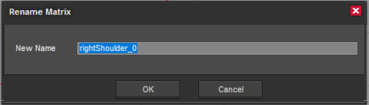
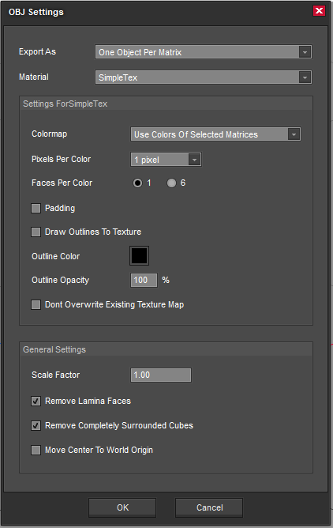
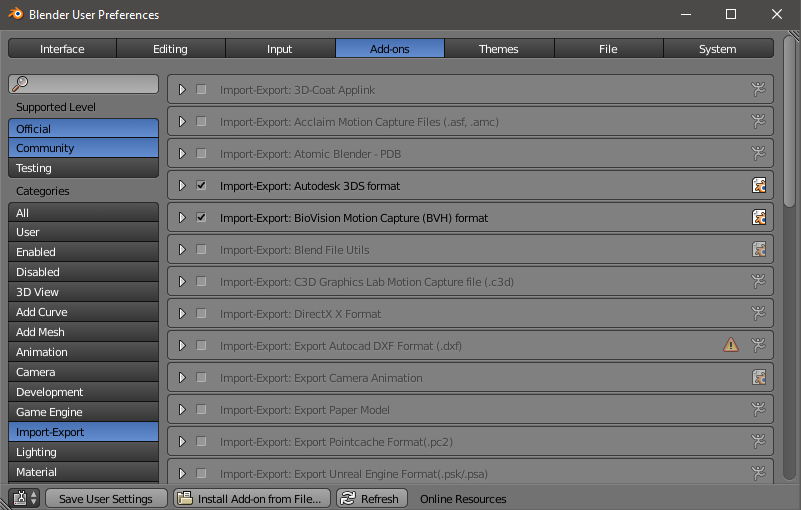
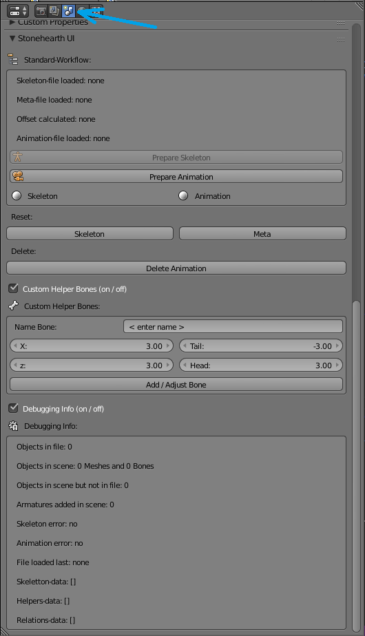
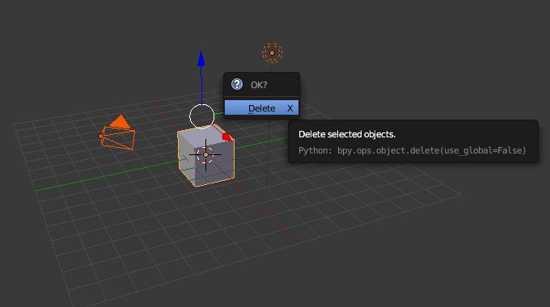
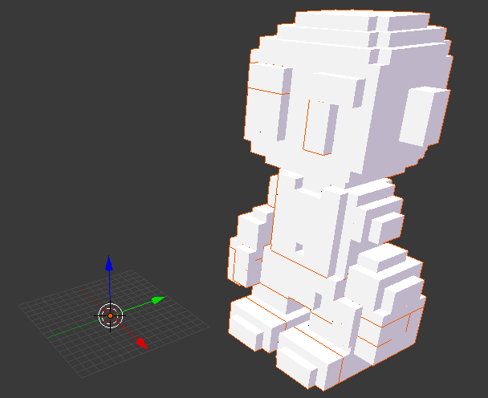
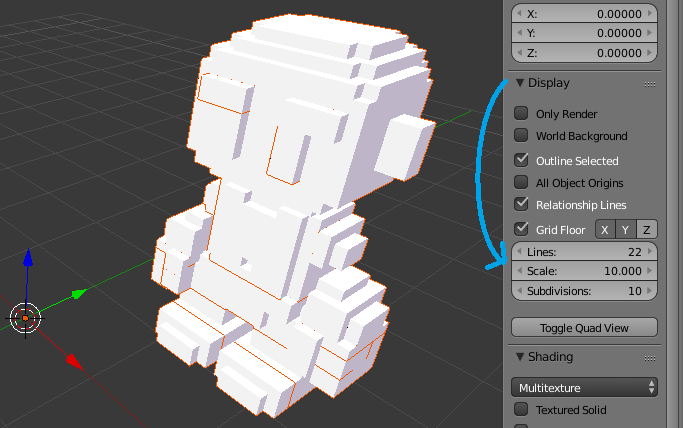

The animation effects are stored in some of the subdirectories of stonehearth/data/rigs.
The effect file
Example of an animation track from an effect JSON file:
"animation": {
"type": "animation_effect",
"start_time": 0,
"animation": "chop.json",
"loop": true
}
These are the fields that we can find in an animation track:
- "type" : "animation_effect" -- the type of the track. An animation effect.
- "animation" -- name of the animation file to play. Here we only have to say the name of the file (for example,
work.json). We have to setup correctly the rig of the entity, since it will have a property to define the folder in which the animations for this entity are stored, so that the game can find them just with the name. - "loop" -- a boolean (defaults to false). Usually it'll be true for entities that play a constant animation or pose (such as certain workbenches and containers), and false for animations that are meant to be played only once. Certain animations played by the AI will still have this set to true, such as eat, chop or breathe animations, but in general be careful since looping tracks can make an AI action get stuck when not configured correctly.
- "start_time" -- optional field (defaults to 0). Time in milliseconds at which the animation should start in regards to the whole effect.
- "end_time" -- optional field (defaults to the natural duration of the animation). Time in milliseconds at which the animation should end. If there are other tracks that are longer, the last frame will be held until the whole effect ends.
- "speed" -- optional field (defaults to 1, minimum is 0.01). The speed at which the animation should be played.
- "blend_time" -- optional field (defaults to 200). The time that the animation blending will last (in milliseconds).
- "response_frame" -- optional field. Only used for animations that will be played on hearthling conversations. It's the frame of this animation at which the next speaker will start talking. Not really related to rendering the animation, it's just a flag for the Lua code to make the other person start an animation.
Hide bone and attach item tracks
Together with the animation tracks, we sometimes see these other types of track: "hide_bone" and "attach_item_effect".
"hide_carrying" : {
"type": "hide_bone",
"start_time": 0,
"end_time": 0,
"bone": "carry"
}
We have these properties:
- "type" : "hide_bone" -- the type of the track is hide bone. This track will hide a bone from the entity's skeleton when this animation is played. Useful to hide items like weapons in eat/sleep animations, etc.
- "bone" -- the name of the bone to hide. If the bone is invisible (a helper bone) and doesn't have anything attached when this animation runs, we don't need to add a "hide_bone" track to the effect for it.
- "start_time" -- optional field (defaults to 0). The time in milliseconds at which the bone should start to stay hidden.
- "end_time" -- optional field (defaults to the duration of the effect). The time in milliseconds at which the bone should be visible again. Don't use if the effect loops.
Example of attach item tracks:
"grab_axe" : {
"type": "attach_item_effect",
"start_time": 0,
"end_time": 0,
"item": "stonehearth:worker_axe",
"bone": "mainHand"
},
"grab_tool" : {
"type": "attach_item_effect",
"start_time": 0,
"end_time": 0,
"item_in_slot": "mainhand",
"bone": "mainHand"
}
We have these properties:
"type" : "attach_item_effect" -- the type of the track is attach item. This track will attach an item to a bone from the entity's skeleton when this animation is played.
"bone" -- the name of the bone to attach the item to.
"start_time" / "end_time" -- optional fields (will default to the duration of the effect). Same than for the hide_bone track.
"item" / "item_in_slot" -- we must use one of these fields to determine the item to attach:
For "item" we just have to specify a URI. The item will be attached to the bone just for the duration of the animation.
You might see that for the
promote.jsoneffect, "item" is"{{talisman}}". We can use this syntax surrounding the name of a variable with double curly braces if we set up a value for it via the AI (in this case you can see it in thestonehearth/ai/actions/change_job_using_talisman_action.luafile).For "item_in_slot" we must specify an equipment slot. Whatever item is currently equipped in that slot will be shown attached to the specified bone for the duration of the animation.
The animation files
Let's now discuss the different files involved in making animations.
In the stonehearth mod, they're organized in subfolders from stonehearth/data/rigs. For example, for hearthlings they're in stonehearth/data/rigs/entities/humans. We normally have 2 folders (effects and animations) and then one JSON file for the skeleton and one for the postures.
For the case of hearthlings, we made a skeletons folder to contain the male and female skeleton files, and also have several JSON files besides postures.json to store data concerning conversations and happiness (moods).
The skeleton
The skeleton or rig is a JSON file defining the bones that will move every part of the entity.
Example of a small rig file:
{
"type" : "rig",
"skeleton": {
"ATTOVERCOG": [15.0,-15.8389449183,50.7871090782],
"door": [7.0,15.0,19.0],
"frame": [15.5,15.0,0.0],
"head": [15.0,-14.9748535817,23.3160510152],
"root": [15.0,15.0,0.0]
},
"animation_root" : "file(animations)",
"effects_root": "file(effects)"
}
We can see these properties:
"type" : "rig" -- this file represents a skeleton.
"skeleton" : {} -- here we define the bones for the entity. Each key is the name of a matrix/layer from the QB model (we separate each movable part to a different layer), and the value is an array representing X, Y and Z coordinates for the pivot. That part of the model will be moved/rotated with that pivot as origin.
We can also include bone names that aren't names of matrices from the model. For example, most skeletons will have a "root" bone aligned with the floor and the center of the entity. It represents where the entity is located in the ground, so it's rarely moved, but normally all the other bones are parented to it in your animation program so that animating is easier.
For hearthlings we also have a "bodyPosition" bone, to move all the body without moving the "root". The "ATTOVERCOG" bone is used to attach images to it, such as the health indicator or speech bubbles. There's also the "mainHand" and "offHand" bones, which are used to attach weapons or other items to the hearthlings hands.
In general, you can have as many helper bones as you need, and they don't need to be present in all the animations (for example, the "carry" bone isn't used in all the animations). The helper bones aren't visible in the game unless we attach something to them.
"animation_root" -- points to the folder where we keep all the animations for this skeleton.
"effects_root" -- points to the folder where we keep all the effects (with animation tracks) for this skeleton.
"postures" -- optional field. Points to a
postures.jsonfile to define postures for the entity."conversation_effects" -- optional field. Points to a
conversation_effects.jsonfile defining effects for conversations (only use if the entity can have conversations - like heartlings or pets). Check the existing ones for examples."moods" -- optional field. Points to a
moods.jsonfile, to apply animations depending on the entity's mood (only use if they can be happy/sad like hearthlings). It contains maps of animations like in the postures file.
You might see a "weighted_effects" field in some rigs. It's not used anymore, instead we have a "stonehearth:idle_effects" field inside the entity_data to randomize idle effects based on weights.
You might also see a "collision_shape" : {} field in some of the rigs. It's also not used, we define the collision type in the mob component of the entity.
 Important! To associate a skeleton to an entity, we need to define the animation table in the render_info component of the entity's JSON file. For instance:
Important! To associate a skeleton to an entity, we need to define the animation table in the render_info component of the entity's JSON file. For instance:
"components": {
"render_info": {
"animation_table": "stonehearth:skeletons:humanoid:male"
}
}
The "animation_table" property must point to the skeleton JSON file.
Postures
Postures are a way of defining different animations for certain situations. They are managed via the posture component.
A shortened example from the human postures.json
{
"stonehearth:carrying" : {
"idle_breathe" : "carry_idle",
"run" : "carry_walk"
},
"stonehearth:sitting" : {
"idle_breathe" : "sitting_idle",
"idle_sway" : "sitting_idle",
"idle_look_around" : "sitting_idle"
},
"stonehearth:sitting_on_chair" : {
"eat" : "sitting_on_chair_eat"
},
"stonehearth:patrol" : {
"run" : "patrol_walk"
},
"stonehearth:have_shield" : {
"combat_1h_idle" : "combat_1h_idle"
},
"stonehearth:swimming" : {
"idle_breathe" : "idle_swim",
"idle_sway" : "idle_swim",
"idle_look_around" : "idle_swim",
"run" : "run_swim"
}
}
In this file we define postures, and map animations to other animations inside them. In Lua code we call radiant.entities.set_posture(entity, posture) (or use the 'stonehearth:set_posture' AI action) to change the posture to one of the keys defined here.
Then when we play any of the animations defined for that posture while the entity is in that posture, the animation that will actually play is the one assigned in the map.
For example, when a hearthling is swimming they get a buff that changes their posture to "stonehearth:swimming". If then we tell them to play the "idle_breathe" animation, they'll play the "idle_swim" animation instead.
Animations
Finally, let's describe the animation files. Like everything else, they're just JSON files. We place them all inside the animations folder of the corresponding rig, so that the folder can be referenced in the skeleton (there's no index to mixinto animations to). Usually they have the same name than the effect file that references them, even if the effect file has additional tracks (like sounds, particle effects, etc).
Each animation file contains 3 fields:
"type" : "animation" -- this file represents an animation.
"total_frames" -- optional field. A string containing the number of frames. Doesn't seem to be in use anywhere, but you can use it to remember how many frames the animation has.
"frames" : [] -- an array containing the frames of the animation. Some points to take into account:
Each animation must have at least 2 frames.
Each frame is a JSON object containing the position, rotation and scale of every bone from the skeleton. Example of one frame from a door rig:
{ "root": { "pos": [0,0,0], "rot": [1.0,0.0,0.0,0.0] }, "frame": { "pos": [0,-5.5,0], "rot": [1.0,0.0,0.0,0.0] }, "rightDoor": { "pos": [-16,0,10], "rot": [1.0,0.0,0.0,0.0] }, "leftDoor": { "pos": [16,0,10], "rot": [1.0,0.0,0.0,0.0] }, "head": { "pos": [3,-22,27], "rot": [1.0,0.0,0.0,0.0] } }The "pos" array represents X, Y and Z coordinates.
The "rot" array represents the rotation as a quaternion (w, x, y, z).
Scale support was introduced later in the game (to animate the hearthlings' eyes) so some existing animations might be missing the "sca" array (contains scale for x, y, z).
How to create animations
In order to create an animation for an entity in Stonehearth, we need a 3D modeling/animation program that can export to the JSON format that the game uses. To do that, people have created plugins or add-ons that can be used with known programs. You can create your own too.
Here you can find the original animation video tutorials by community member voxel_pirate.
Here you can find a more recent animation video tutorial made by community member Moonsight.
Below we'll explain how to animate with the Blender add-on based on those tutorials.
These are general steps that should work to produce animations for Stonehearth. Feel free to adjust your workflow if you're more proficient with Qubicle / Blender. You can also use other 3D applications as long as they can import / export to the formats that Stonehearth uses for the rigs and animations.
Tools for animating
There are several plugins available for creating animations in the Stonehearth format. If you want more functionality, you can make your own plugin for the animation program of your choice. The format of the JSON files that need to be imported / exported is easy to understand.
- 3ds Max scripts -- these scripts were used initially by the development team to export the rigs and animations. There are no instructions about how to use them, and they might have bugs or be outdated, but you might want to try them if your program of choice is 3ds Max.
- Maya scripts -- these scripts were used after the development team switched to Maya for making animations. Please read this Readme file before using! There's a community member who also created their own scripts for Maya a long time ago, but at the moment most people use the Blender add-on.
- Blender add-on -- community member
voxel_piratecreated this add-on to use with Blender. We'll be giving directions on how to use it in this guide.
Preparing the model
First of all, regardless of the tool you've chosen, the QB model should be prepared and exported to a format that your animation program can read.
Normally models meant to be animated will not be centered over (0, 0, 0) in Qubicle / your modeling program (at least the ones for mobs). When in doubt, load up their QB model and see if it's centered.
As mentioned before, each movable part of the model should be split into a separate matrix/layer in the .qb file.
We usually leave all the layers with the same size until we're done iterating with the model, and then optimize them at the end. We might need to separate more parts to different layers if when animating they look strange, and in Qubicle they move to the origin when we paste them, so keeping the same size will ensure they're correctly aligned to each other while we work on the model.
Name each layer like the bone you're going to use in your skeleton (e.g.
head,body,leftArm, etc). We normally use lowercase names without underscores, although we use numbers sometimes. Check this page to see how the hearthling body parts were named.If you're going to reuse an existing skeleton (such as the hearthling's rig) make sure that the bone names match with those in the skeleton file (without counting the helper bones). Qubicle might have appended extra
_0text in their names which will give us some trouble later.In Qubicle, you can rename a matrix by selecting it and pressing F2:

For hearthlings, the body, head, eyes (and eyebrows for the male) are in separate files, so you'll want to merge them together before exporting to .obj (or export them separately then import all of them in Blender).
Once all the parts are split and correctly named, it's time to export them. Select them all (or none) so that the whole model is taken into account, and export it as .obj (or another format that your animation program supports, such as .dae for example). Make sure that in the export options the layers are kept as separate objects.
For Qubicle 1, the .obj export settings are:
- Export As : One Object Per Matrix
- Material : SimpleTex
Settings for SimpleTex:
- Colormap : Use colors of selected matrices
- Pixels per color : 1 pixel
- Faces per color : 1
- Padding : unchecked
- Draw outlines to texture : unchecked
- Outline color and outline opacity : (indifferent as we didn't check the setting above)
- Don't overwrite existing texture map : unchecked
General settings:
- Scale factor : 1.00
- Remove lamina faces : checked
- Remove completely surrounded cubes : checked
- Move center to world origin : unchecked

Lastly, once you've finished iterating with the model/rig, you can optimize the matrices/layers and reexport the model as a .qb, to save in size in your mod. In Qubicle 1 this is done by selecting the matrices and clicking on the 'Modify > Optimize Size' menu. All empty space around the voxels will shrink while maintaining a cubical layer as boundary.
The workflow to export the prepared model might be completely different in other tools. For example, Voxelshop can't export to .obj, but can export to .dae (which Blender can read). However, the model parts might move, flip or scale themselves during import/export or other issues can arise since it's a different format, so you'll need to adjust your animation workflow.
Blender add-on setup
We'll explain how to setup the environment for animating with the open source program Blender.
The Blender add-on was developed by community member voxel_pirate. It supports import of existing rigs, use of meta files (which are custom files created by the add-on to reflect bone hierarchy, not used in the game), export of skeletons and animations, and offseting animations so that we don't have to make the same animation from scratch for the male and female skeletons. It can import existing animations too, but since the JSON files describe each frame of the animation, it's hard to work with them.
Download the latest version of Blender here.
Download the Stonehearth add-on here. It will be named something like
io_stonehearth_###.zip. You may also find some meta files in that page.
The add-on was made around the version 2.69 of Blender, but should still work with newer versions. It doesn't support scale for animations, but it might support it in the future.
Instructions for installing the add-on:
Open Blender, and go to File-> User Preferences... and make sure "Add-ons" is selected at the top and "Import-Export" is selected at the left menu: 
Click on the "Install Add-on from File..." button at the bottom of the window.
Select the zip folder of the add-on, there's no need to uncompress it (or if you've already uncompressed it, select the
init.pyfile instead). Click on "Install from File..." at the top right.Search for 'Import-Export: Stonehearth Add-On' (the list should have refreshed to only show that), and check it in order to enable it.
Click on "Save User Settings" at the bottom so that the add-on keeps being enabled any time you open Blender, and close the window.
Verify that the add-on was loaded. Go to 'File->Import...' and 'File->Export...' and check that a new type called "Stonehearth (.json)" is listed there.
If installing the add-on this way didn't work (due to permissions or other reasons), try uncompressing it and pasting the folder inside the Blender Foundation/Blender/<version_number>/scripts/addonsdirectory (might be hidden).If you are updating the Add-On then you might want to un-check it from the add-ons list and delete it from your hard disk, to prevent any confusion.
Preparing the scene in Blender
Instructions to prepare the scene for animating:
Open Blender.
Go to the Scene menu. In a default installation of Blender, it will appear in the menu at the right. Click on the third icon (a light, sphere and cylinder) and if you scroll down, you should see a section called "Stonehearth UI", expand it if it's closed:

With the mouse cursor over the default 3D scene, press "A" twice to select everything.
Press "Delete" and click on the small button that appears next to your mouse to confirm the deletion.
 The starting scene must be empty. You may save the current scene as a Blender file (.blend) for the future, to start your new animations with a clean environment.
If you import now the .obj model, you might think the model wasn't imported correctly. But if you zoom out, you'll see something like the following picture:
 which feels strange an uncomfortable.
To change the grid this Press "N" to open the hidden menu at the right side of the scene.
Expand the "Display" section, click on "Lines" and type 22, then press enter. Click on "Scale" and change it to 10.
Now the view grid will fit the model better:
 You can save this setup by going to File->User Preferences and saving. Press N again to hide the menu if you want.